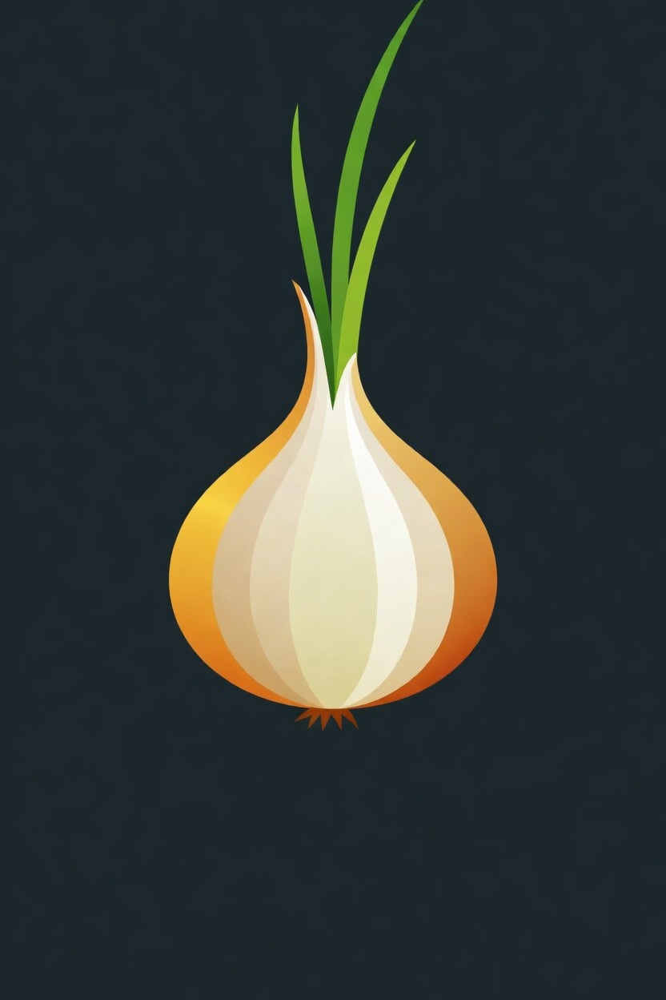
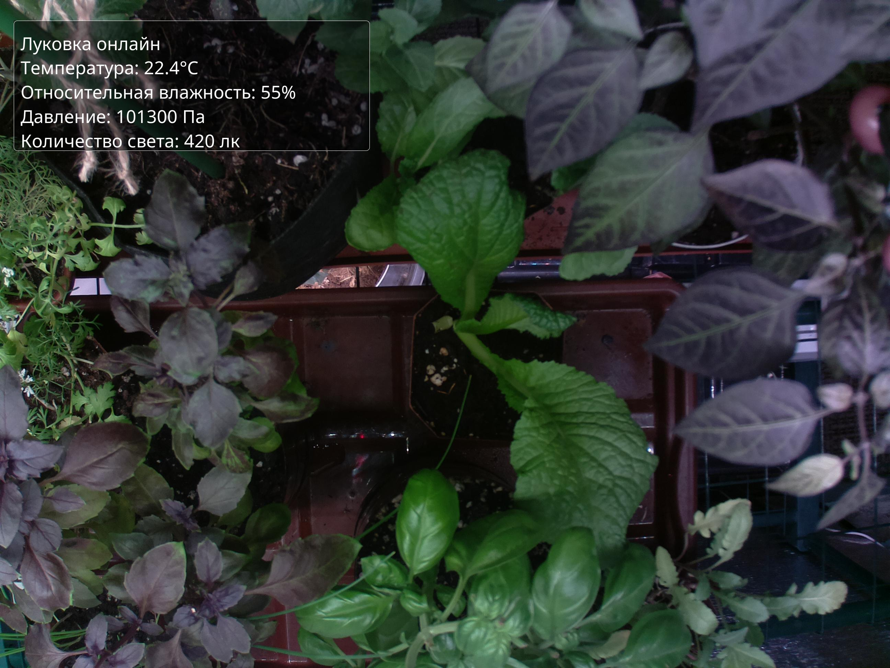

Луковка онлайн

Добро пожаловать на школьный проект Егора!
Луковка - это школьный проект по предмету [TODO]. Тема: [TODO]. Здесь можно наблюдать за ростом лука в реальном времени.
Актуальные значения параметров окружающей среды:
Параметр
Значение
Дата и время
12 марта 2026 14:50:49
Температура
22.4°C
Относительная влажность
55.0%
Давление
101300.0 Па
Количество света
420.0 лк
Свежее фото
